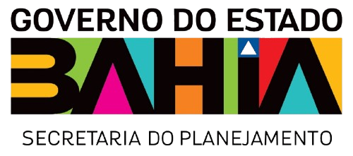

Síntese Avaliativa do Desempenho dos Programas do PPA Bahia 2024–2027
Secretaria do Planejamento do Estado – Seplan

Visão Geral
PPA
Desempenho Global
dos Programas
Assistência Social e Garantia de Direitos
400
Acesso à Justiça
401
Educação e Cultura
402
SUAS Bahia
403
Segurança Alimentar
404
Cuidado em Liberdade
Ciência, Tecnologia e Inovação
405
Bahia Inovadora
Cultura
406
Cultura na Bahia
407
Memória e Patrimônio
408
Economia da Cultura
Desenvolvimento Produtivo
409
Cresce Mais
410
Fortalece Aê
411
Viva Bahia
412
Trabalho Decente
413
Bahia Solidária
414
Esporte por Toda
Desenvolvimento Rural
415
Minha Terra
416
Cultive Conhecimento
417
Campo Sustentável
Desenvolvimento Urbano
418
Bahia Minha Casa
419
Mobilidade Bahia
420
Saneamento Básico
421
Urbaniza Bahia
Educação
422
Escola Presente
423
Educatecno
424
Educação Superior
425
Escola Democrática
Igualdade e Comunidades
426
Bahia Antirracista
427
Povos Tradicionais
428
Bahia Indígena
429
Mulher sem Violência
430
Inclusão Mulheres
Infraestrutura e Logística
431
Mais Energia
432
Em Movimento
Meio Ambiente e Água
433
Meio Ambiente
434
Segurança Hídrica
Saúde
435
Cuidar Mais
436
SUS Forte
Segurança e Defesa Social
437
Bahia Segura
438
Ressocializar
439
Trânsito Seguro
Gestão Governamental
440
Planeja Bahia
441
Gestão Fiscal
442
Serviços Públicos
443
Governo Digital
444
Bahia Participativa
445
Gestão Pessoas
446
Patrimônio